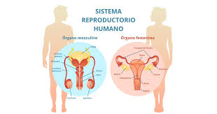
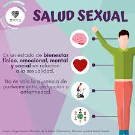
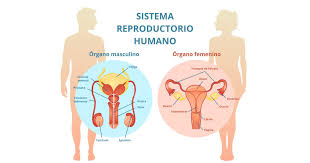
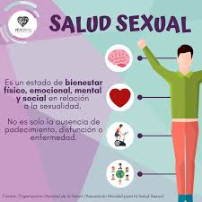

Conoce tu cuerpo
La educación sexual comienza por comprender el cuerpo humano. Aprender sobre los órganos reproductores, cómo funcionan y cómo cuidarlos es fundamental.
 La educación sexual comienza por comprender el cuerpo humano. Aprender sobre los órganos reproductores, cómo funcionan y cómo cuidarlos es fundamental.
 